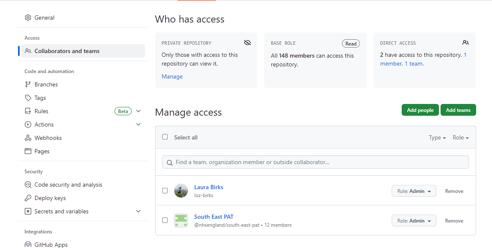
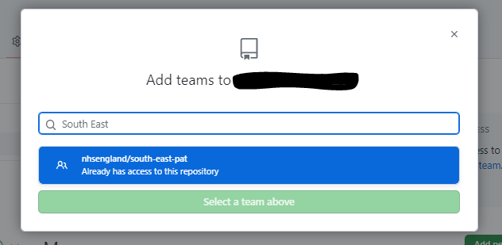

Publishing Your First Repo
GitHub for South East D&A
Our ambition in South East D&A is to share as much code as possible on GitHub, to maximise sharing with others as well as to help ourselves out in future. There are lots of things that this document does not cover but this is a very basic guide to publishing your first repo and hopefully we can make it less scary!

Preliminary Steps
Before we start, we need to check the following:
- You have a GitHub account (with 2FA)
- You have been added to the NHS England Organisation
- You have been added to the South East D&A Team
Get a GitHub account
This is super simple- go to GitHub (https://github.com/) and click Sign Up:

Then you need to enable two factor authentication. Once logged in, go to Settings > Password and authentication, and, in the section called Two-factor authentication, click Enable and follow the instructions. You can use the same app that you authenticate other access with.

Get added to the NHS England Organisation and SE D&A area
Once you have a GitHub account and are set up with 2FA, you can email the organisational GitHub Management inbox at github@england.nhs.uk, requesting to be added to the NHS England Organisation and then one of our local admins can add you to the South East D&A area.
Important note: the permissions set up means that creating a repo in your personal area and moving it to the organisation area will result in you losing all admin permissions (e.g. to add users / move to the team area). So make sure you are putting repos in the right place!!
That’s it, we’re ready to share some code!
Sharing code via the browser
This section covers very basic code sharing via the browser. It does not utilise many of the features of Git or GitHub but is a good first step for creating a library of code we can return to.
Create the repo
When we first log in to GitHub, our homepage will look something like this. To create a repo, click the green New button in the left hand Top Repositories section.

We will also find this button in the Repositories sections on our profile and within any organisations that we are part of. They all lead to the same place. Which is here:


As you can see, there are several things that need filling, and some that don’t. We take them from the top:
Repository template- A couple of teams have set up templates for their repos to make life easier for them e.g. if they create a lot of repos with the same structures. If you haven’t created a template or don’t recognise any of them, you probably want to leave this as No template.
Owner- Depending on where you were when you clicked the New Repository button, this will default to either your own account or one of your organisations. It’s up to you where you store your repos but, generally, you would want to put work that you intend to share with colleagues within the organisation and keep only personal things in your own area.
Repository name- This should be a unique name that is short but reasonably descriptive. GitHub will handily tell you if the name is already in use somewhere else. Repo names shouldn’t include spaces but don’t worry if you forget, GitHub will replace spaces with hyphens.
Description- Although this field is optional, it’s a good idea to put something in here to help you (and others) quickly identify what the code is.
Public / Private- If you select Public then anyone anywhere can see your repo and the code within it. Selecting Private means that only those within the organisation (if the owner is an organisation) can see the code. Generally, this should be the default option- you can always change the privacy later.
Add a README file- Again, this is optional but generally a good idea. It will automatically create a markdown file with the repo name as the title and the description as the contents. You can then add details about the project including inputs, outputs, purpose, methodology etc. which will help you and others trying to use your code later.
Add .gitignore- A gitignore file tells GitHub which files to not look at and not publish. This could be things like data or personal user keys that you don’t want to share. We will use these more when we look at using GitHub Desktop but it is less important if you just plan to upload files manually.
Choose a license- This just tells people what they can do with their code. You can leave this as None if you want or, if you’re happy for people to use and replicate your code as they please, you might choose the MIT License.
Now you can click Create repository.
Move the repo to the team area
If you have created your repo in the organisational area, you might want to move it to live in the South East area. This is very simple.
- Navigate to the repo and click the Settings button

- Within the Access section, click Collaborators and teams (top left), and click Add teams

- Finally search for and select South East D&A

- Choose what role you want your team members to have

Your repo now lives in the South East D&A section of the organisation. This should make it easier to find and will allow your team colleagues to make changes if you’ve allowed them to!
Add files to the repo
Finally, all you need to do is actually upload some files!
- Navigate to your repo and click Add file and then Upload files

- Drag and drop or browse to your files

- Name your commit, so you know what you added when, and click ✨Commit changes✨

Using GitHub Desktop
For those that want do more version control and collaboration, GitHub desktop is a good place to start.
Setup
First step is to download GitHub Desktop from the company portal. If you open the company portal, you can search for GitHub. You want to download the app with the purple cat.

You will then need to open it up and you should be prompted to pop in your github username (you may need to validate this in the browser version- I can’t remember).
If you ever need to change your associated github account, you can navigate File > Options, and switch account in there.

Local repo management
Create a repo
Even though it looks a little different, a lot of the process to create a repo in GitHub Desktop is similar to that of creating a repo in the browser, see Section 3.1 for a reminder. The main difference is that your repo will live locally until you choose to publish to GitHub, so no need to choose where it lives or privacy settings. You will, however need to choose which local file to put the repo folder- this will be where you save all your code.

.gitignore
What is it for?
Setting up a gitignore file is a bit more important when working from GitHub desktop than when simply uploading files to the browser version. By default, all the files in the repo folder will be included in the repo. However, there are likely to be some files or information that you don’t want to share. For example, this could be data or sensitive connection strings. The gitignore file tells the repo which files not to look at.
How do we set one up?
This file can be set up when you create the repo by selecting a specific gitignore template. This will ignore a determined list of filetypes which are commonly associated with the option you select. For example, if you select the R gitignore template, the file will include all R History, R Data, R User Data, etc. It can be a good starting point if you don’t know where to start.
How can I add new files to the gitignore?
Files can be added to the gitignore manually by right clicking on a file in the Changes section of GitHub desktop, and clicking Ignore file. You can choose whether to add the individual file or all files of the same filetype (this might be useful if you want to blanket ignore e.g. .csv files)
How can I make manual changes?
You can change your gitignore file as you go along by opening it as a text file, making your changes, and saving them. You can then commit changes to your gitignore file in the same way as you commit changes to any other file in the repo so that they are tracked.
Alternatively, you can update the gitignore by navigating to Repository > Repository settings > Ignored files and make changes there.
What can go in the gitignore?
- Individual files: you can ignore individual files by typing the filename
- Whole filetypes: if you want to ignore all of a particular filetype just prefix the filetype with an asterisk e.g. *.xlsx
- Folders and subfolders: if you don’t want a whole folder included, you can just name the folder path e.g. /data
Local changes
Until you click Publish repository, everything you create will live locally. This means that you can make changes to your files and code and play about endlessly until you’re happy to share more widely. It’s still a good idea to manage and commit changes.
You should now be able to create your projects and files within the repo folder (which lives wherever you decided when you set up the repo). You are then free to code / change files as you would normally within whichever programmes you use. All your saved changes will be tracked.
Any changes you save in any files in this folder (that aren’t ignored) will appear in the GitHub desktop changes section. You can see which file has changed, what has been removed (red), and what has been added (green). If you like the changes, ensure that the tick box is checked on the left of the file name, name your commit and add a description (optional), and click Commit to main.
A green square on the right of the file indicates a completely new file, orange indicates changes to an existing file, red indicates a deleted file.

You can make changes to multiple files in a single commit or commit them separately if you are likely to want to revisit multiple changes separately
History
If you need to review or revisit any prior commits, you can see these in the History tab.

Push to GitHub
All that’s left to do is share your repo to github. This is as easy as clicking the Publish repository button.

Remember to select the organisation if you want to share with colleagues. If you publish to your private area, you can transfer to the organisation but you will lose admin rights so won’t be able to make changes or move to the South East area!
You can also pull any changes from github down to your local machine by clicking Pull origin in the top bar
Open a GitHub repo
As well as creating your own repos, it may be that you want to open someone else’s that you’ve seen on GitHub. There are 2 easy ways to do this:
- From the browser
- From the desktop app
From the Browser
This is really easy. Navigate to the repo you want to work on. Click the green <> Code button, and then Open with GitHub Desktop. Easy.

From GitHub Desktop
This is almost as easy. Within GitHub desktop, navigate to File > Clone Repository and paste in either the URL of the repo in question, or type in the github username and repo name. The only other thing you need to do is tell GitHub desktop where you want the repo folder to live on your machine.

Hints / tips / notes / things that don’t particularly belong anywhere in particular
We do not have the power to delete repos from the NHS England organisation. If you need to have something deleted, you will need to contact the central inbox at github@england.nhs.uk.